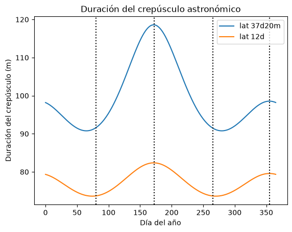

Problema 8#
Calcular la duración del crepúsculo astronómico en minutos, en un lugar de latitud φ = 37° 20’ y cuando el Sol tiene declinación \(\delta_{\odot}\) = -2°.
Considerar que el Sol recorre 24 horas de ángulo horario en 24 horas de tiempo.
Planteamiento#
Dado que asumimos que el Sol recorre su ángulo horario en tiempo uniforme, es suficiente calcular el ángulo horario del Sol cuando se pone (\(H_1\)) y cuando alcanza el final del crepúsculo astronómico (altura del Sol -18°), \(H_2\). El tiempo será directamente la diferencia entre ambos ángulos horarios.
Calculamos el ángulo horario \(H_1\)
\(\cos H_1 = - \tan \delta_{\odot} \tan \phi \)
Para el ángulo \(H_2\) tenemos que utilizar la ecuación completa de transformación:
\(\cos H_2 = \frac{\sin a_c - \sin \delta_{\odot} \sin \phi}{\cos \delta_{\odot} \cos \phi} \)
con \(a_c = -18^{\circ}\)
from astropy.coordinates import Angle
import astropy.units as u
import numpy as np
import matplotlib.pyplot as plt
ac = -Angle("18d")
lat = Angle("37d20m0s")
dec = -Angle("2d0m0s")
H1 = np.arccos(-np.tan(dec) * np.tan(lat))
H1 = Angle(H1)
print("Angulo horario del ocaso:",
H1.to_string(unit="hourangle", precision=1))
Angulo horario del ocaso: 5h53m53.7s
v1 = np.sin(ac) - np.sin(dec) * np.sin(lat)
v2 = np.cos(dec) * np.cos(lat)
H2 = np.arccos(v1 / v2)
H2 = Angle(H2)
print("Angulo horario del final del crepúsculo:",
H2.to_string(unit="hourangle", precision=1))
Angulo horario del final del crepúsculo: 7h24m57.1s
diffH = H2 - H1
print(f"Duración del crepúsculo {diffH.hour * 60:.2f}m")
Duración del crepúsculo 91.06m
Bonus#
Podemos calcular este valor fácilmente para todos los días del año, usando el mismo procedimiento que en el ejercicio 2.
# Modelo para la longitud eclíptica del Sol
# https://www.aa.quae.nl/en/reken/zonpositie.html
M0 = 357.5291
M1 = 0.98560028
# Días del año
tm = np.arange(0, 366)
# Anomalía media
M = Angle(M0 + M1 * tm, unit='deg')
# Ecuación del centro
C1 = Angle(1.9148, unit='deg')
C2 = Angle(0.0200, unit='deg')
C3 = Angle(0.0003, unit='deg')
C = C1 * np.sin(M) + C2 * np.sin(2*M) + C3 * np.sin(3*M)
# Longitud del periastro
peri = Angle(102.9373, unit='deg')
# La longitud del Sol desde la Tierra es 180 grados más
# que la de la Tierra desde el Sol
mean_l = peri + M + Angle(180, unit='deg')
lon = mean_l + C
# latitud eclíptica del Sol ~ 0
# Conversión a coordenadas ecuatoriales
eps = Angle("23d26m12s")
# Declinación para cada día del año
dec_a = Angle(np.arcsin(np.sin(eps) * np.sin(lon)))
# Repetimos el cálculo, pero ahora los valores de H son vectores
# con un valor para cada día del año.
# Creando una función, podemos repetir al cálculo en otras latitudes
def calc_crep(dec_a, lat):
ac = -Angle("18d")
H1 = np.arccos(-np.tan(dec_a) * np.tan(lat))
H1 = Angle(H1)
v1 = np.sin(ac) - np.sin(dec_a) * np.sin(lat)
v2 = np.cos(dec_a) * np.cos(lat)
H2 = np.arccos(v1 / v2)
H2 = Angle(H2)
diffH = (H2 - H1).hour * 60
return diffH
plt.title("Duración del crepúsculo astronómico")
plt.xlabel("Día del año")
plt.plot(tm ,calc_crep(dec_a, Angle("37d20m0s")), label="lat 37d20m")
plt.plot(tm ,calc_crep(dec_a, Angle("12d00m0s")), label="lat 12d")
plt.axvline(80, ls="dotted", c="black")
plt.axvline(172, ls="dotted", c="black")
plt.axvline(265, ls="dotted", c="black")
plt.axvline(355, ls="dotted", c="black")
plt.legend()
plt.ylabel("Duración del crepúsculo (m)");

Las líneas verticales punteadas representan el equinoccio de primavera, solsticio de verano, equinoccio de otoño y solsticio de invierno, respectivamente.